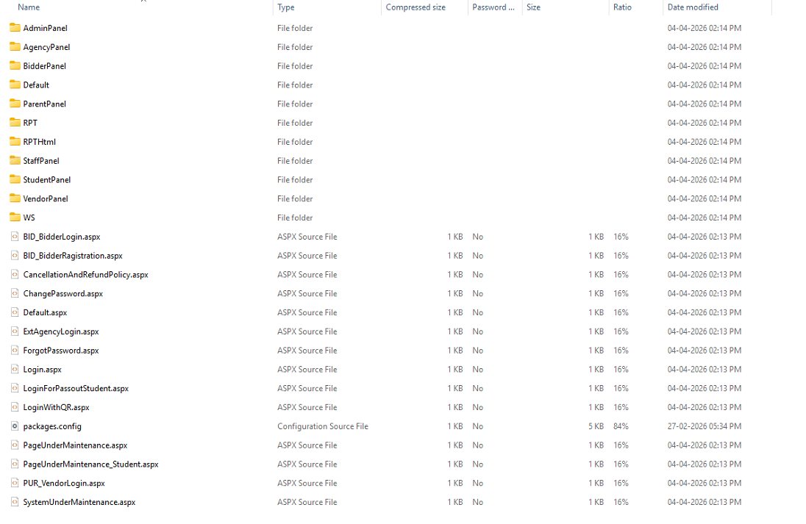
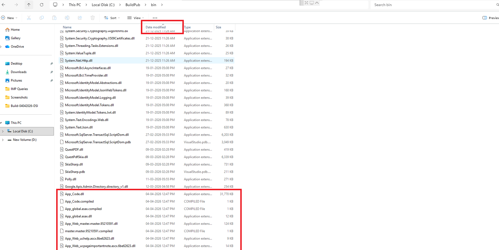

Project Build & Publishing
Standard Operating Procedure for standardized building, publishing, and preparing deployment packages.
1. Purpose
To define a standardized process for building, publishing, and preparing deployment packages (ASPX & DLL ZIP files) to ensure consistency and accuracy.
2. Scope
Applicable to all developers responsible for project build, publish, and deployment activities within the GNUMS ecosystem.
3. Responsibilities
Developers are strictly required to:
- Update and build the project
- Export build to
BBfolder - Publish the project from
BBenvironment - Prepare deployment ZIP files (ASPX & DLL)
4. Definitions
| Term | Description |
|---|---|
BB Folder |
Build Completed Backup Code Environment |
BuildPub Folder |
Storage location for finalized published output |
App_Data |
Critical folder containing publish profiles (DO NOT DELETE) |
6. Procedure
6.1 Update & Build
Sync current source and perform a full build in Visual Studio.
6.2 & 6.3 BB Environment Setup
Prepare the BB workspace. If it already exists, clear all contents **EXCEPT**
App_Data.
App_Data will lose essential publish
profiles.6.6 Publishing
Right-click project in the BB instance → Publish Web App.
7. Post-Publish: ZIP File Creation
After successful publishing, generate the deployment packages.
7.1 ASPX Code ZIP
📦 GNUMS_PublishASPX_YYYYMMDD_hhmmtt.zip

7.2 DLL ZIP
📦 GNUMS_PublishDLL_YYYYMMDD_hhmmtt.zip
Bin folder. Sort by Modified
Date (descending). Select DLLs modified after the last deployment date. Create ZIP
package.

8. Do’s and Don’ts
✅ Do’s
- Build before every export
- Keep BB folder environment clean
- Clean BuildPub before publishing
- Create both ASPX and DLL ZIP files
❌ Don’ts
- NEVER export without a build
- DO NOT publish outdated binary files
- DO NOT delete App_Data profile folder
- DO NOT miss modified DLLs in Bin